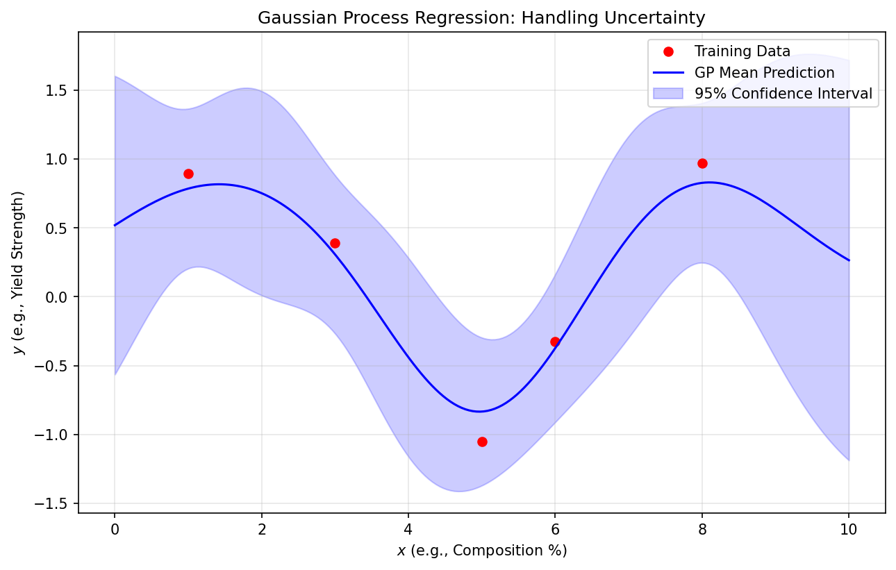
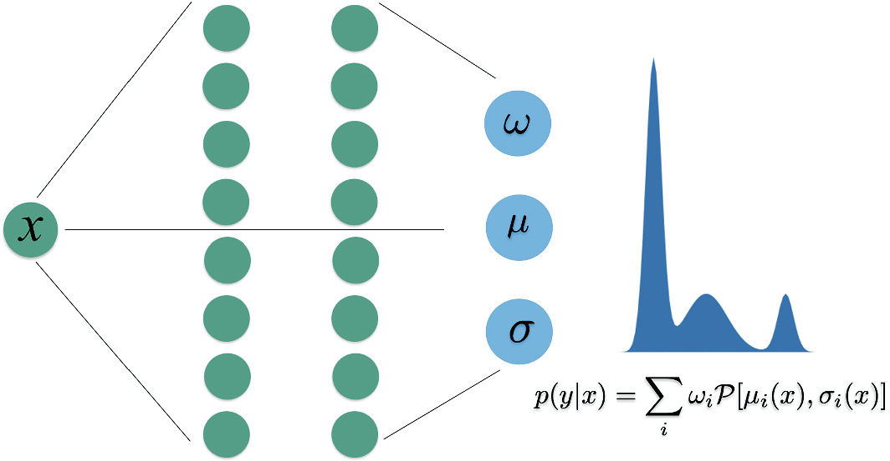
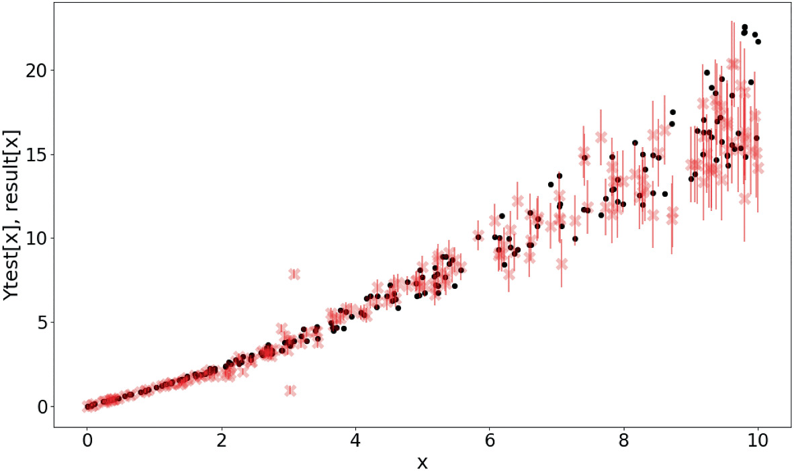

Machine Learning for Characterization and Processing
Unit 12: Uncertainty-aware regression & Gaussian Processes
AI 4 Materials / KI-Materialtechnologie
01. Intro & The Cost of Uncertainty
The Danger of Point Estimates
- Standard ML models give a single number (e.g., Yield strength = 800 MPa).
- Problem: What if the model is “confused” due to sparse data?
- In engineering, a point estimate without an error bar is a liability.
- Trust = Prediction + Confidence.
Why UQ in Materials Science?
- Small Data: Experiments are expensive; we often have <100 samples.
- High Risk: Predicting material failure incorrectly leads to catastrophe.
- Active Learning: We need to know where to perform the next experiment.
02. Taxonomy of Uncertainty
Aleatoric Uncertainty (Statistical)
- “Uncertainty due to randomness.”
- Examples:
- Sensor noise in a TEM.
- Thermal fluctuations during solidification.
- Irreducible: More data won’t change the noise floor of the instrument.
Epistemic Uncertainty (Systemic)
- “Uncertainty due to lack of knowledge.”
- Examples:
- Predicting properties of a new alloy family.
- Extrapolating beyond the training process window.
- Reducible: Collecting more samples in that region “teaches” the model.
Total Uncertainty
- \(\sigma_{total}^2 = \sigma_{aleatoric}^2 + \sigma_{epistemic}^2\).
- Visualization: The “Uncertainty Ribbon” balloons in data-poor regions.

03. Bayesian Regression
The Bayesian Philosophy
- (Bishop 3.3)
- Treat weights \(\mathbf{w}\) as probability distributions, not single numbers.
- Prior \(p(\mathbf{w})\): What we believe before seeing data (Expert knowledge).
- Posterior \(p(\mathbf{w} | \text{Data})\): Our updated belief after experiments.
Predictive Distribution
- Instead of one prediction, we average the predictions of ALL possible models.
- Result: Mean \(\mu(x)\) (Best Guess) and Variance \(\sigma^2(x)\) (Error Bar).
- The variance naturally increases away from the training data.
04. Gaussian Processes (GPs)
From Weights to Function Space
- (Rasmussen & Williams 2006)
- Instead of learning weights, we define a distribution over functions: \[f(x) \sim \mathcal{GP}(m(x), k(x, x'))\]
- \(k(x, x')\) is the Kernel (Covariance function).
Kernels: The Heart of the GP
- The Kernel defines “Similarity”: If \(x\) and \(x'\) are close, \(f(x)\) and \(f(x')\) should be similar.
- RBF (Gaussian): Smooth, infinitely differentiable.
- Matern: Less smooth, better for “noisy” physical phenomena.
- Periodic: For repeating structures (lattices).
GP Regression: The “Confidence Ribbon”
- Near training points: Uncertainty is low (pins the function).
- Away from data: Uncertainty grows back to the prior.
- Mesh-free: Excellent for small, high-quality materials datasets.

05. Uncertainty in Deep Learning
Scaling the Trust
- GPs are slow for large data (\(O(N^3)\)).
- How to get UQ in Deep Learning?
- MC Dropout: Keep dropout ON during testing to sample the model distribution.
- Deep Ensembles: Train multiple models to see where they disagree.
Mixture Density Networks (MDNs)
- (Neuer 6.4.4)
- NN predicts the parameters of a distribution (\(\mu, \sigma, \pi\)).
- Handles multi-modal physics (e.g., a process resulting in two possible phases).


06. Case Studies & Summary
Bayesian Optimization
- Using the GP uncertainty to guide discovery.
- Acquisition Function: Balancing Exploitation (near good points) vs Exploration (uncertain points).
- Finding optimal properties with 90% fewer experiments.
Recap: Unit 12
- Point estimates hide risk; distributions reveal it.
- GPs provide principled, non-parametric UQ.
- Kernels encode physical length scales.
- Uncertainty is the guide for Smart Experimental Design.
References & Further Reading
- Neuer (2024): Ch. 6.4 (Stochastic Methods)
- Bishop (2006): Ch. 3.3 & 3.5 (Bayesian Linear Models)
- Rasmussen & Williams (2006): Gaussian Processes for ML